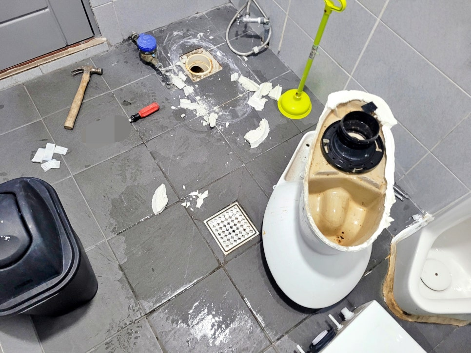
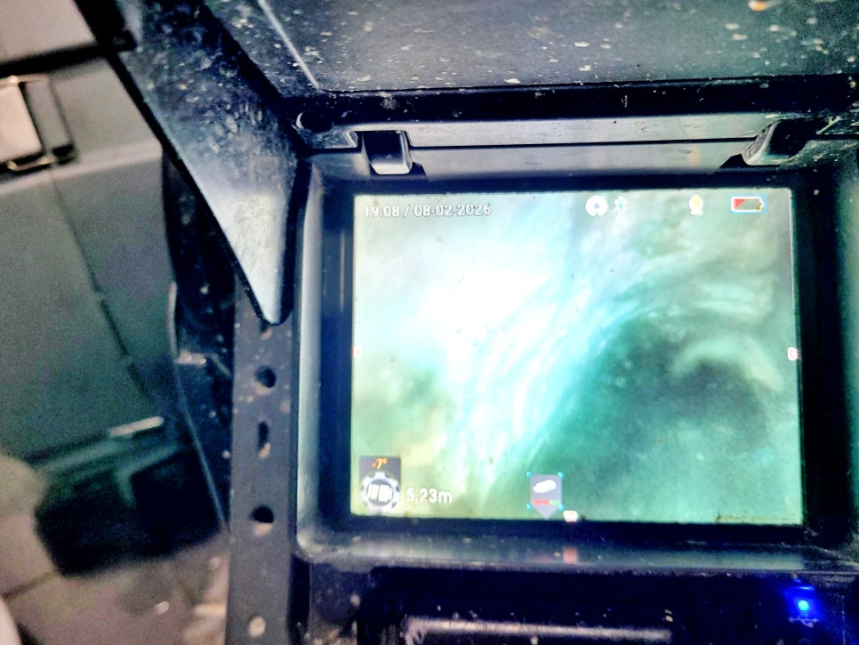
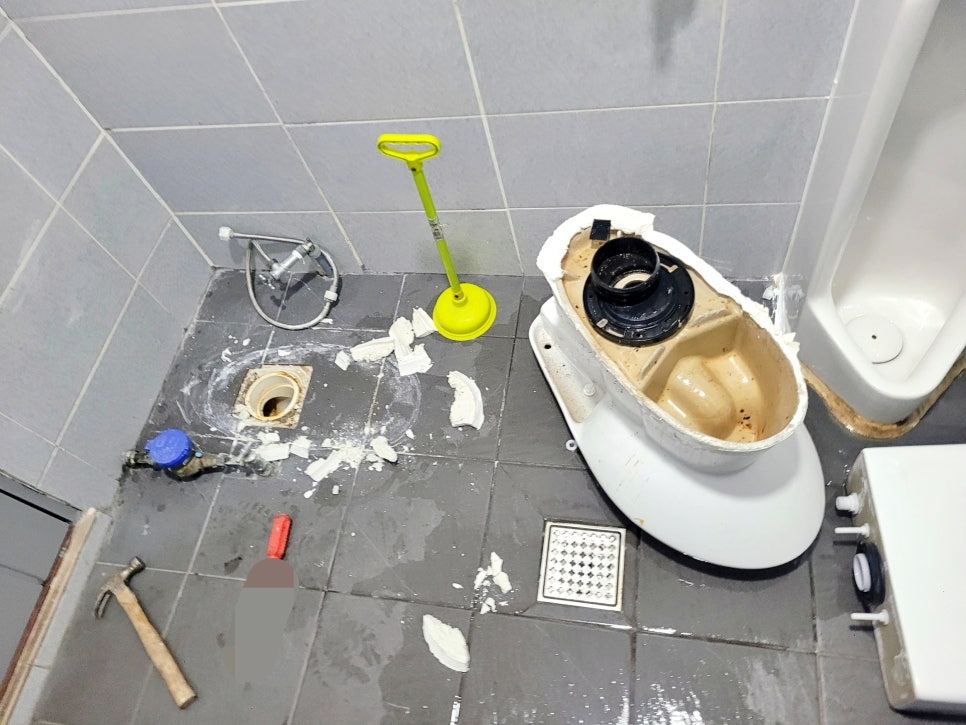
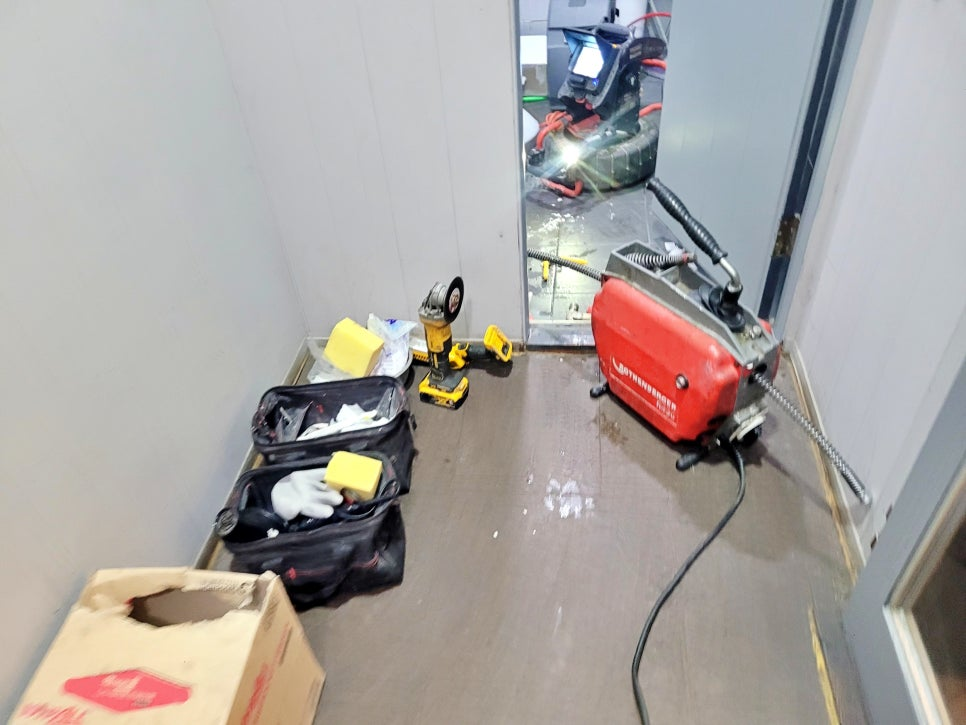
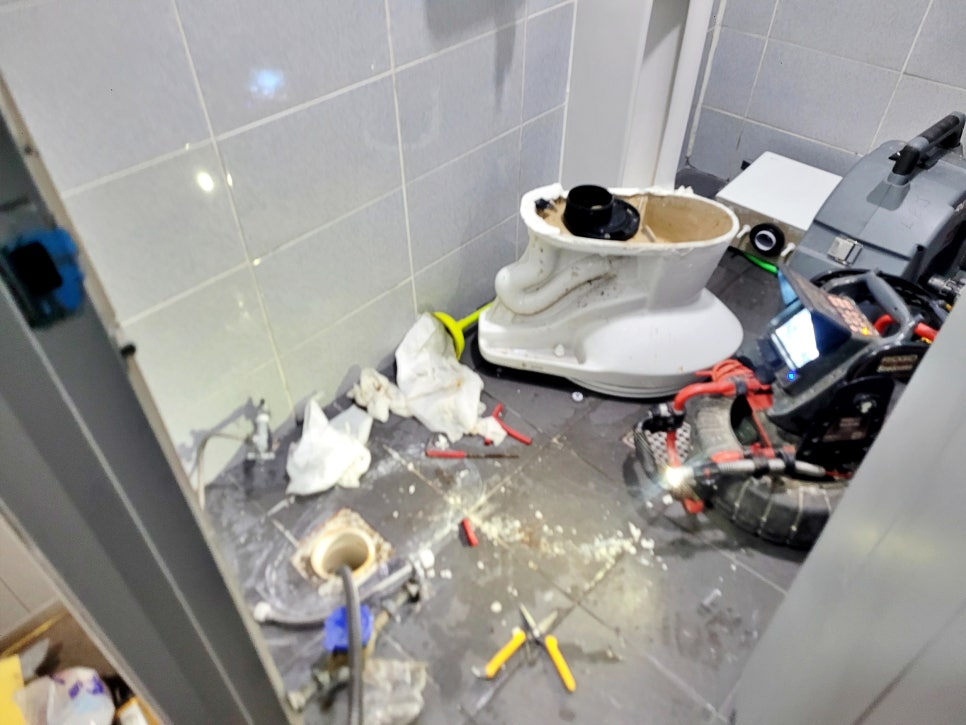
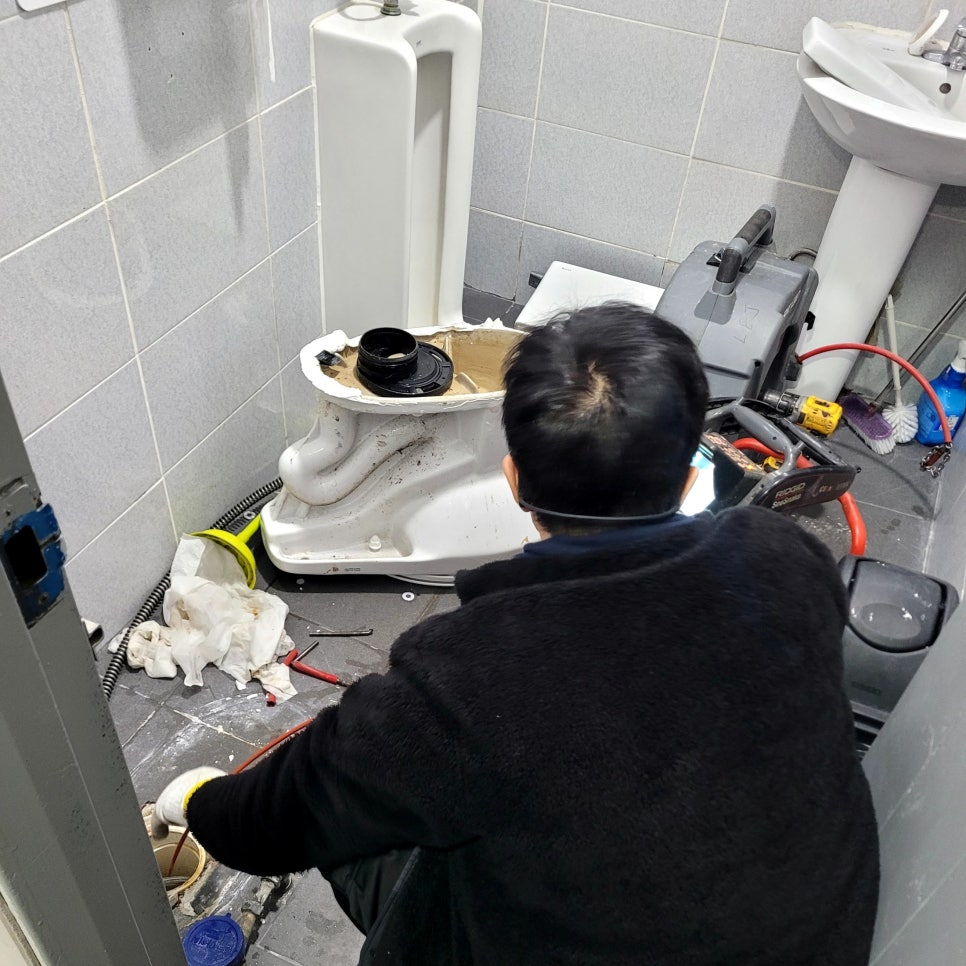

🏠 권선구 세류동 상가 변기막힘, 물 내리면 역류하는 원인 해결함
수원 변기막힘 전문 시공 후기

📋 작업 개요
- 위치: 수원
- 서비스 유형: 변기막힘, 하수구막힘, 배관막힘, 맨홀막힘, 역류해결, 뚫는업체, 배관청소, 배관보수
- 작업 일시: 2026. 2. 25. 10:27
- 업체명: 하수구수사대 (010-5615-2118)
🔍 문제 상황
수원 권선구 세류동 상가 변기막힘,
물 내리면 역류하는 원인 완벽하게
해결했어요.!!
안녕하세요?
수원 권선구 세류동 변기막힘 역류
잘 뚫는 업체 하수구수사대입니다.
오늘 저희가 다녀온 현장 후기는
세류동 상가 화장실 변기에 물을
내리면 시원하게 내려가지 않고
오히려 역류하는 문제를 해결한
실제 사례인데요.
수원 권선구 세류동 상가 변기막힘
현장에 도착해 일반 관통기로 1차
시도를 해봤지만 해결이 되지 않아
어쩔 수 없이 탈거하고 내시경과
스프링, 샤프트 장비로 막힌 곳을
뚫어 해결해야 했습니다.
과연 이번 현장은 왜 이러한 문제가
갑자기 발생했는지 그 원인과 해결
과정을 상세히 살펴보겠습니다.
1. 세류동 상가 변기막힘 원인은 기름
오수관 내부에 쌓인 기름 슬러지 모습
내시경 장비를 동원해 막힘 원인을

🔎 원인 분석
💡 전문가 진단: 수원 권선구 세류동 상가 변기막힘,물 내리면 역류하는 원인 완벽하게해결했어요.!!
💡 전문가 진단: 수원 권선구 세류동 상가 변기막힘,물 내리면 역류하는 원인 완벽하게해결했어요.!!
확인해 봤는데요. 단순히 휴지나
오물로 인한 막힘이 아니었습니다.
일반 관통기로 아무런 효과가 없었던
이유는 막힘 지점이 변기 자체가 아닌
오수관 내부에 있었기 때문인데요.
스프링 관통기로 통수하는 작업 과정
권선구 세류동 상가 변기막힘 원인은
다름아닌 기름이 오수관 내부에 쌓여
오랜 시간 퇴적되어 단단한 슬러지
층을 형성해 역류한 것이었죠.
2. 변기 탈거 및 관통 작업 개시
세류동 변기막힘 역류의 정확한
원인 파악을 위해 먼저 변기를
조심스럽게 탈거했으며, 이어서
배관 내부에 내시경 카메라를
투입했는데요.
화면을 통해 확인한 배관 내부는
예상보도 심각했습니다. 슬러지가
배관의 절반 이상을 가로막고 있어
물이 지나갈 틈이 없는 상태였죠.
세류동 변기막힘 역류 원인 파악 후
상가 관계자분들에게 상세히 설명을
드린 후

🔧 작업 과정
스프링 관통기와 샤프트 장비를
오수관 내부에 투입해 막힌 곳을
정밀하게 뚫어주며 청소 작업을
시작했는데요.
먼저 스프링 관통기를 투입해 배관의
굴곡진 부분을 타고 넘어가 내부의
단단한 슬러지를 파쇄했으며
외부 오수 맨홀까지 막힌 곳을 뚫음
그 이후 다시 플렉스 샤프트 노즐을
배관 내부에 다시 진입시켜 내벽에
쌓인 기름 슬러지들을 깨끗하게
제거하며 외부 오수 맨홀까지
도달한 것을 확인할 수 있었습니다.
수원 세류동 상가 변기막힘 역류
원인인 기름과 오물을 모두 제거한
것을 확인한 저희는 철거했던 변기를
오수관에 정확하게 연결하고 복구를
진행했고요.
원상복구 과정에서 바로 옆에 설치된
소변기 하단 매지가 일부 깨진 곳까지
백시멘트로 깔끔하게 보수했습니다.
세류동 상가 변기막힘 통수 및 복구
작업을 모두 마친 후에는 관계자분들과
함께 배수 테스트를 진행했는데요.
위 화면과 같이 시원스럽게 배수되는
모습을 확인할 수 있었습니다.
3. 세류동 변기막힘 시공을 마치며
오늘 소개한
권선구 상가 변기역류 원인은 기름과
오물로 막혀서 발생한 것인데요.
"특히 상가 화장실 막힘은 원인을
정확히 모른 채 무리하게 통수
작업을 진행하면 배관 손상으로
이어질 수 있기 때문에"
막힌 단계별 내시경 장비를 통해
정확한 진단과 적절한 통수 장비


✅ 작업 완료
사용이 가장 효과적인 방법입니다.
지금 혹시
변기 물을 내리면 시원하게 내려가지
않거나 역류하는 문제가 발생했다면
바로 하수구수사대를 불러주십시오.
지금까지
"권선구 세류동 상가 변기막힘, 물
내리면 역류하는 원인 해결함"
후기를 정독해 주셔서 감사합니다.
#권선구세류동상가변기막힘 #권선구상가화장실막힘 #세류동상가화장실역류 #세류동변기막힘역류 #세류동변기막힘잘뚫는업체 #세류동변기배관청소업체




⚠️ 하수구 배관 막힘 예방 및 관리 가이드
- ✅ 머리카락, 비닐, 물티슈 등 물에 분해되지 않는 이물질은 하수구 유입을 절대 금지해 주세요.
- ✅ 하수구 거름망을 씌우고 모여진 이물질은 주기적으로 쓰레기통에 바로 비워주셔야 합니다.
- ✅ 배관 노후가 심할 경우 이물질이 더 쉽게 걸리므로 주기적인 배관 세척(고압세척 등)을 권장합니다.
- ✅ 작업 후 1년 이내 재발 시 하수구수사대에서 무상 A/S 보증 서비스를 제공합니다.
💡 핵심 정리
- 확실한 장비 작업(내시경 점검 및 샤프트 스케일링)으로 원인을 뿌리 뽑습니다.
- 작업 후 1년 이내에 동일한 부위 재발 시 100% 무상 A/S 서비스를 보장합니다.
- 서울 · 경기 · 인천 전 지역에 24시간 언제든 긴급 출동할 수 있도록 항시 대기 중입니다.
❓ 자주 묻는 질문 (FAQ)
🚨 수원 변기막힘 문제로 고민이신가요?
정확한 원인 진단과 확실한 시공으로 재발 없는 해결을 약속드립니다.
24시간 긴급 출동 | 서울 · 경기 · 인천 전지역 | 1년 내 재발 시 무상 A/S